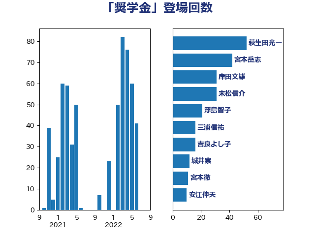

単語「奨学金」

| 萩生田光一 | 自由民主党 | 52 回 |
| 宮本岳志 | 日本共産党 | 42 回 |
| 岸田文雄 | 自由民主党 | 31 回 |
| 末松信介 | 自由民主党 | 31 回 |
| 浮島智子 | 公明党 | 21 回 |
| 三浦信祐 | 公明党 | 16 回 |
| 吉良よし子 | 日本共産党 | 16 回 |
| 城井崇 | 立憲民主党 | 12 回 |
| 宮本徹 | 日本共産党 | 11 回 |
| 安江伸夫 | 公明党 | 10 回 |
| 斉藤鉄夫 | 公明党 | 8 回 |
| 浅野哲 | 国民民主党 | 8 回 |
| 菅義偉 | 自由民主党 | 8 回 |
| 杉久武 | 公明党 | 7 回 |
| 深澤陽一 | 自由民主党 | 7 回 |
| 河西宏一 | 公明党 | 6 回 |
| 田村智子 | 日本共産党 | 6 回 |
| 舩後靖彦 | れいわ新選組 | 6 回 |
| 上野通子 | 自由民主党 | 5 回 |
| 中野洋昌 | 公明党 | 5 回 |
| 塩村あやか | 立憲民主党 | 5 回 |
| 山崎正恭 | 公明党 | 5 回 |
| 山添拓 | 日本共産党 | 5 回 |
| 櫻井充 | 自由民主党 | 5 回 |
| 鰐淵洋子 | 公明党 | 5 回 |
| 下野六太 | 公明党 | 4 回 |
| 住吉寛紀 | 日本維新の会 | 4 回 |
| 大西健介 | 立憲民主党 | 4 回 |
| 宮口治子 | 立憲民主党 | 4 回 |
| 山本ともひろ | 自由民主党 | 4 回 |
| 斎藤嘉隆 | 立憲民主党 | 4 回 |
| 泉健太 | 立憲民主党 | 4 回 |
| 浜口誠 | 国民民主党 | 4 回 |
| 田村貴昭 | 日本共産党 | 4 回 |
| 菊田真紀子 | 立憲民主党 | 4 回 |
| 国光あやの | 自由民主党 | 3 回 |
| 大塚拓 | 自由民主党 | 3 回 |
| 後藤茂之 | 自由民主党 | 3 回 |
| 柳ヶ瀬裕文 | 日本維新の会 | 3 回 |
| 櫛渕万里 | れいわ新選組 | 3 回 |
| 田野瀬太道 | 無所属 | 3 回 |
| 竹内真二 | 公明党 | 3 回 |
| 蓮舫 | 立憲民主党 | 3 回 |
| 藤田文武 | 日本維新の会 | 3 回 |
| 西村康稔 | 自由民主党 | 3 回 |
| 赤羽一嘉 | 公明党 | 3 回 |
| 野田聖子 | 自由民主党 | 3 回 |
| 高木かおり | 日本維新の会 | 3 回 |
| 井上信治 | 自由民主党 | 2 回 |
| 伊佐進一 | 公明党 | 2 回 |
| 伊藤孝恵 | 国民民主党 | 2 回 |
| 倉林明子 | 日本共産党 | 2 回 |
| 前原誠司 | 国民民主党 | 2 回 |
| 吉川元 | 立憲民主党 | 2 回 |
| 山下芳生 | 日本共産党 | 2 回 |
| 岩渕友 | 日本共産党 | 2 回 |
| 川崎ひでと | 自由民主党 | 2 回 |
| 志位和夫 | 日本共産党 | 2 回 |
| 櫻井周 | 立憲民主党 | 2 回 |
| 源馬謙太郎 | 立憲民主党 | 2 回 |
| 玉木雄一郎 | 国民民主党 | 2 回 |
| 芳賀道也 | 国民民主党 | 2 回 |
| 丹羽秀樹 | 自由民主党 | 1 回 |
| 勝部賢志 | 立憲民主党 | 1 回 |
| 吉田統彦 | 立憲民主党 | 1 回 |
| 坂本哲志 | 自由民主党 | 1 回 |
| 大塚耕平 | 国民民主党 | 1 回 |
| 太田房江 | 自由民主党 | 1 回 |
| 小倉將信 | 自由民主党 | 1 回 |
| 小川淳也 | 立憲民主党 | 1 回 |
| 小野泰輔 | 日本維新の会 | 1 回 |
| 岡本あき子 | 立憲民主党 | 1 回 |
| 岡本三成 | 公明党 | 1 回 |
| 打越さく良 | 立憲民主党 | 1 回 |
| 新垣邦男 | 立憲民主党 | 1 回 |
| 杉尾秀哉 | 立憲民主党 | 1 回 |
| 村井英樹 | 自由民主党 | 1 回 |
| 東徹 | 日本維新の会 | 1 回 |
| 枝野幸男 | 立憲民主党 | 1 回 |
| 横沢高徳 | 立憲民主党 | 1 回 |
| 水岡俊一 | 立憲民主党 | 1 回 |
| 田村憲久 | 自由民主党 | 1 回 |
| 白石洋一 | 立憲民主党 | 1 回 |
| 矢倉克夫 | 公明党 | 1 回 |
| 石井啓一 | 公明党 | 1 回 |
| 石川昭政 | 自由民主党 | 1 回 |
| 礒崎哲史 | 国民民主党 | 1 回 |
| 福山哲郎 | 立憲民主党 | 1 回 |
| 福島みずほ | 社会民主党 | 1 回 |
| 稲富修二 | 立憲民主党 | 1 回 |
| 竹谷とし子 | 公明党 | 1 回 |
| 西銘恒三郎 | 自由民主党 | 1 回 |
| 進藤金日子 | 自由民主党 | 1 回 |
| 野上浩太郎 | 自由民主党 | 1 回 |
| 金子恭之 | 自由民主党 | 1 回 |
| 長谷川淳二 | 自由民主党 | 1 回 |
| 音喜多駿 | 日本維新の会 | 1 回 |
| 高見康裕 | 自由民主党 | 1 回 |